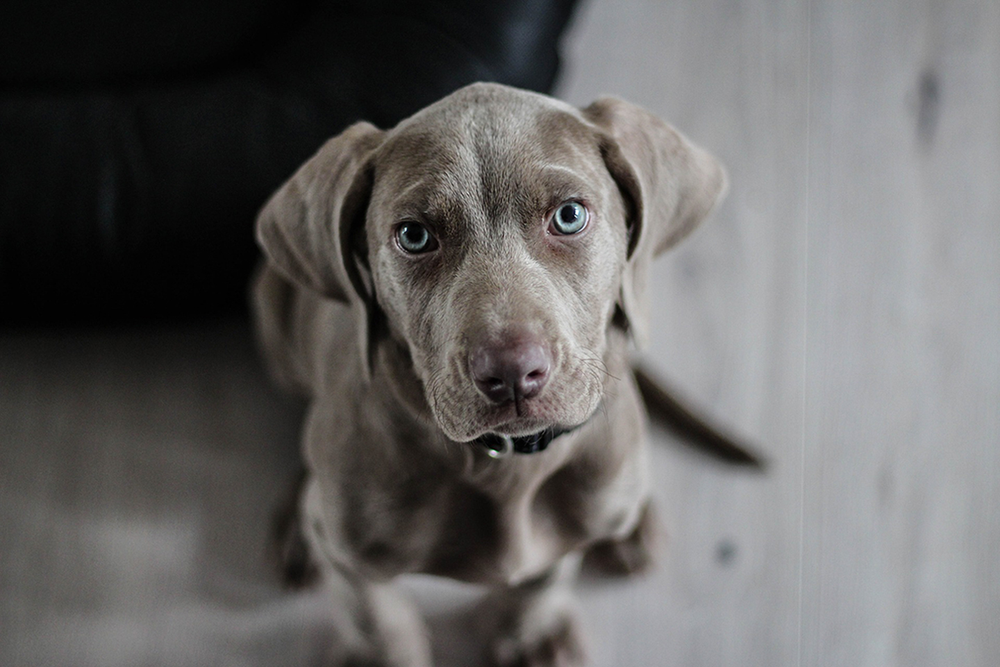

ABOUT US
LOYAL Rescue Inc. is a foster-based rescue and we do not operate a shelter. We do not have viewing hours as each pet is in a private home. Should you be the successful applicant for this pet, you are then welcome to come and meet the dog. You are not obligated to adopt, should you determine the fit is not correct, however we must go through this process prior to meeting the dog.